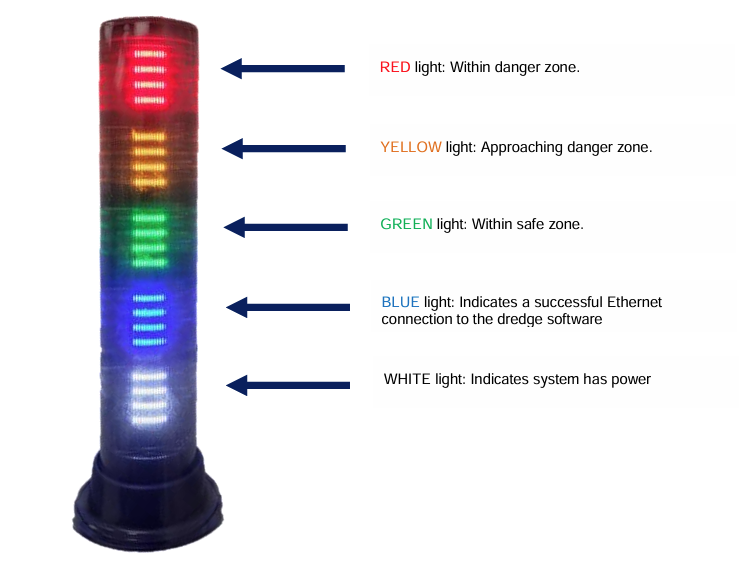
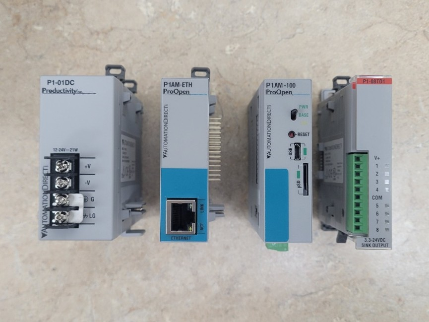
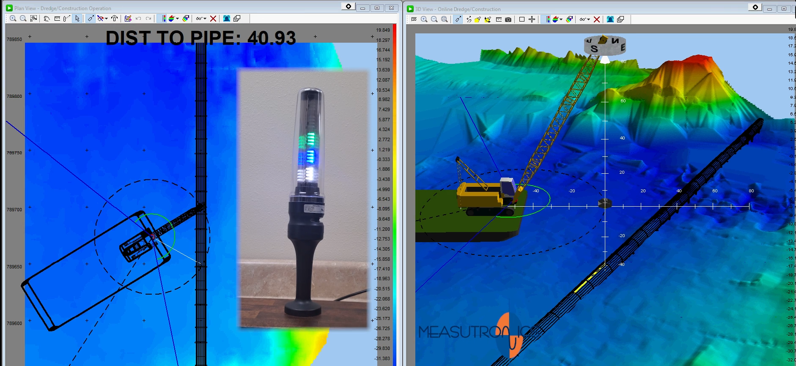
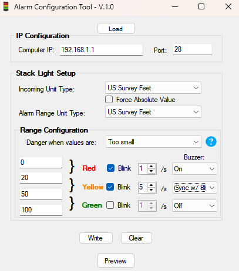
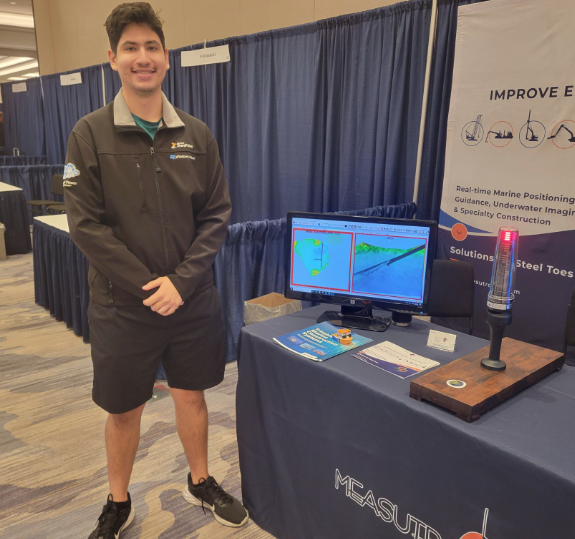

Background
Dredging vehicle operators work 'blind' due to the nature of their environment. Operating a heavy piece of machinery deep underwater poses many challenges, above all safety. As technology has improved and new solutions arrive, conditions improve, but can never totally alleviate safety concerns. Many tradegies have occurred in which dredging operators and other around them are killed, always due to negligence. This project serves to provide additional awareness to a dredge by keeping track of the position of a tool in real time, to avoid pre-determined hazard areas.
Overview
The Alarm System is designed to be a hardware extension of existing dredge software, which tracks the distance to restricted areas in real time. It provides continuous feedback to the operator of their danger status, through the use of a stack light. The logic of the system is handled by a PLC, which takes input from the dredge software via Ethernet TCP connection, and outputs to the stack light from an expansion module. The stack light has 3 main indicator lights that will be display to reflect the current condition:
GREEN indicates the operator is within a safe operating distance away from the restricted area.
YELLOW indicates the operator is approaching the restricted area and should begin performing maneuvers to settle back to a safe operating zone.
RED indicates the operator is dangerously close to a restricted area and must immediately move away to avoid imminent danger.
Other indicator lights including BLUE and WHITE indicate an ongoing Ethernet & power connection respectively.

The PLC and supporting modules are from the P1 series, which allow microcontroller programming (used in this project) in addition to the traditional ladder logic style. The system runs on 24VDC across all modules to directly interface with the stack light.

Technical Overview
This hardware solutions ultimately serves as an extension of existing dredge software. Such software, such as the Trimble Marine Construction software, is capable of taking in real world guidance and positioning data from Real-Time Kinematic (RTK) antennas for processing. From here, an output can be sent over Ethernet to the PLC for processing.

From here the processing is as simple as displaying a specific light depending on the decided exclusion zone. Determining and setting that zone, however, is the primary feature of the device. This is done through a custom Windows Form application (C#) that allows a user to configure multiple settings including units, green, yellow, or red zones, and blink settings.

In the scenario shown above, the light will remain solid GREEN when the distance to the exclusion zone is between 50-100 U.S. Survey Feet, blink YELLOW 5x a second along with a buzzer that blinks at the same frequency between 20-50 U.S. Survey Feet, and flash RED 1x a second with a continous buzzer when between 0-20 U.S. Survey Feet. After inputting settings and the target IP address (P1AM-100), the settings are sent to the P1AM-100 which processes and reboots itself. Afterwards it will abide by the settings as specified in the GUI during normal operation. A link to a video demonstration can be found here.

In total, I am very proud of this project. I believe it represents my dedication as an engineer to provide solutions that benefit the world in a direct and thoughtful way. This is a safety device intended to save lives, and an answer to a specific need so that a tradgedy may never occur again.